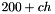

- Consistency in the naming conventions of variables/classes included in the code
- Names made more descriptive when necessary
- Prevent as much copying of information between classes for optimization
- Old ROOT-style functionality currently unimplemented
- C++ streams used instead of stdio functions as much as possible
- Comments improved -- simple coding statements within comments removed
- Unused variables removed, or commented out when the extension of the program to include their eventual use is evident
- Classes are more const correct and therefore users shouldn't be able to mess up things that they shouldn't touch
- Previously called
correlator.cpp
- Header now includes correlation structures (previously in
raw_event.cpp) with different structures for implants and decays
- Now only one main correlation function exists
- DSSD decay spectra plotting now located in DssdProcessor.cpp
- New set of global functions which take over the behaviour of
drrsub.f
- Main plotting functions and generic low-level histogram definitions defined here
- All used DAMM plot ids defined in damm_plotids.h
- No DSSD strip spectra automatically defined
- Major changes
- Previously called
detector_driver.cpp
- Calculation of calibrated energies now in Calibration class
- Significant reduction of members of DetectorDriver
- Simple sanity check function to be run at beginning of analysis
- Most of analysis is now done through a vector of event processors
- Raw event is now accessed globally
- Calibrated spectra are now defaulted to damm id# 
- Calbrations are now matched to the channel identifiers so only one consistent reading of
map.txt is done
- Random number initializations now done here and are scaled appropriately by the contraction factor of the Pixie energies
- A local copy of the analysis' used detectors is no longer made
- Detector summaries have been moved to the RawEvent class
- No "temppoint" handling of detector summaries, instead each EventProcessor will keep its own individual map of detector summaries for the detectors it is interested in
- Previously called
dssd_sub.cpp
- Handles much of the correlation work that was previously done by the DetectorDriver
- Decays required to be anti-coincident with MCP signals
- Plotting for decay spectra now done here
- New class which defines the generic behaviour for the processor which handle events for detectors of different types
- Includes an interface to ROOT for each individual processor
- Previously called
ge.cpp
- Number of clovers is now determined using the global vector of identifiers not from reading
map.txt
- Implicit rules used for most targets
- REVISIOND flag added to support Pixie Rev. D modules
- Target "dist" and "distdocs" added to make tarball of code
- Previously called
mcp.cpp
- Now includes a simple branch for "new"-style ROOT analysis
- Previously called
timeclass.cpp
- Handling of old TOF timeclass for NSCL experiments not currently implemented
- Major changes
- Previously called
pixie_std.cpp
- Chunks starting with a -1 delimiter are now skipped over while looking for the beginning of a spill
- If only the last 5-word chunk is missing from the spill, it is reconstructed
- The last 5-word chunk is checked to verify that it is the last chunk expected for the spill
- Real, system, and user time in analysis reported occasionally
- Random number initialization moved to DetectorDriver.cpp
- Modules are only expected to be read out cyclically
- Support up to 14-slot crates
- Stand-alone ROOT support currently not implemented
- Events now placed into the list of events using their pointers, so they do not need to be copied
- Channel identification index numbers are now extracted from the module and channel number in
map.txt not according to the order of appearance in the file
- Multiple definitions of the same channel in
map.txt will now produce an error
- Platform independce now more obvious through definition of word_t
- Major changes
- Previously called
rawevent.cpp
- Structures for correlation now connected with Correlator.cpp
- Actual Correlator class now included in the RawEvent
- Channel IDs are now returned directly from the data imported from
map.txt -- individual channel events do not contain their own copies
- ID numbers are calculated (not stored) using module and channel numbers
- Much less "structification" for channel events -- ReadBuffData() is a friend to set information. In particular, getting a copy of the trace is no longer supported as this can create a large burden on the analysis
- Detector summaries are now stored with the RawEvent instead of in the DetectorDriver
- Detector summaries now address their constituent events by pointer (not by arbitrary index in RawEvent)
- One function call to handle all details regarding associating a channel event to a particular DetectorDriver
- Less "structification" for the RawEvent -- access to detector summaries is only allowed by pointers to prevent copying of large amounts of channel data
- Asking for an unexpected DetectorDriver will complain accordingly
- A version for both Rev. A and Rev. D of the Pixie modules
- Main function now directly takes a pointer to the beginning of the data to be processed of Pixie words of the appropriate size
- Identifiers are no longer set since they are calculated dynamically in RawEvent.cpp
- New tact of creating ROOT trees where the data is broken into its constituent detector parts (saved as branches) by the event processors. This is in contrast to the old method of saving raw event data
- Previously called
scint.cpp
- If no Ge detectors are present, processor asks for a NULL detectors summary which has to be treated properly
- No more triple counting for plots
- Discombobulated in general
- New simple class which provides a consistent and concise way of calculating means and standard deviations
- Designed to work with the STL accumulate algorithm defined in
numeric
- Example of use in TraceAnalyzer.cpp
- Previously called
trace.cpp
- Better implementation of STL methods
- Filter functions now includes a version to fill the vector in place so an unnecessary copy is not made
- Processing time information is included
Generated on 4 Jun 2016 for Pixie16 Analysis Software Suite by
1.6.1